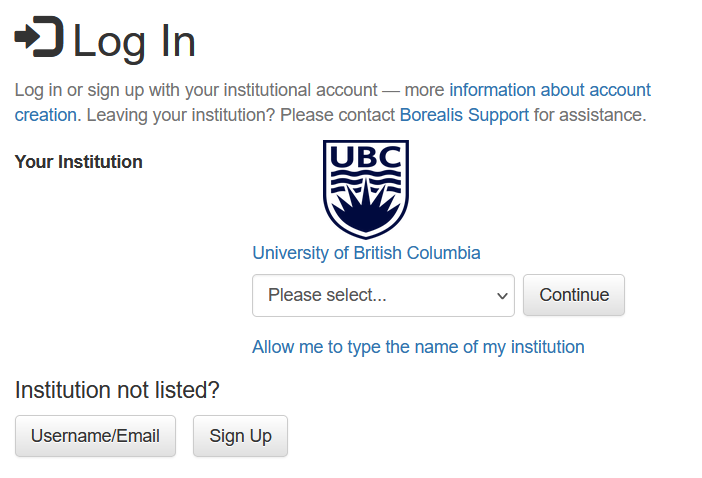
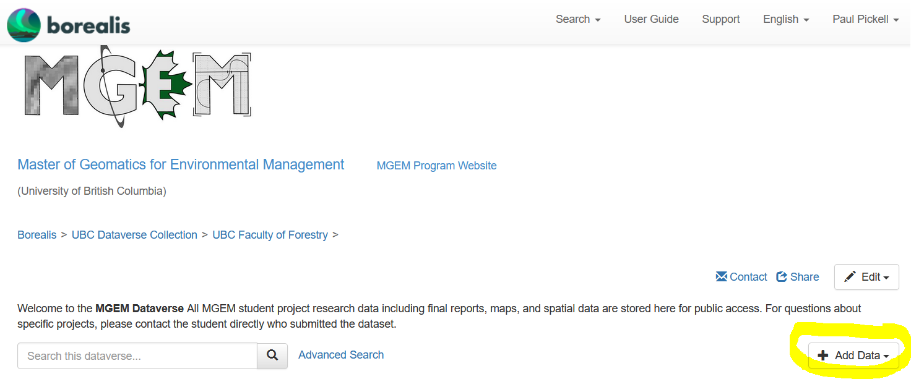
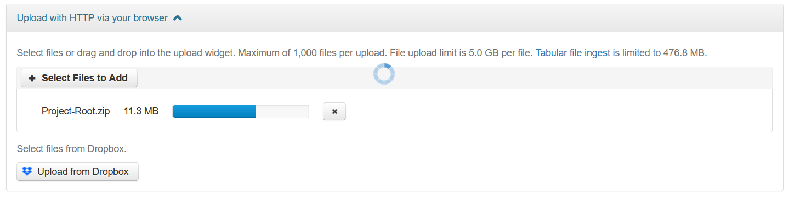
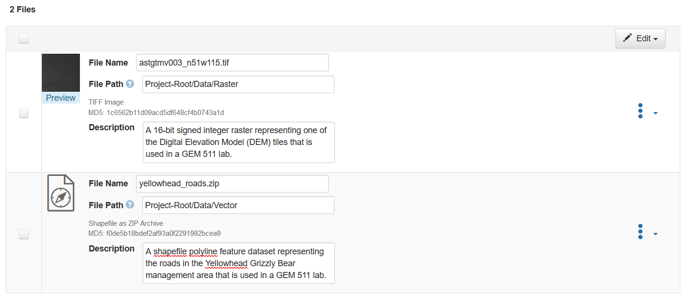
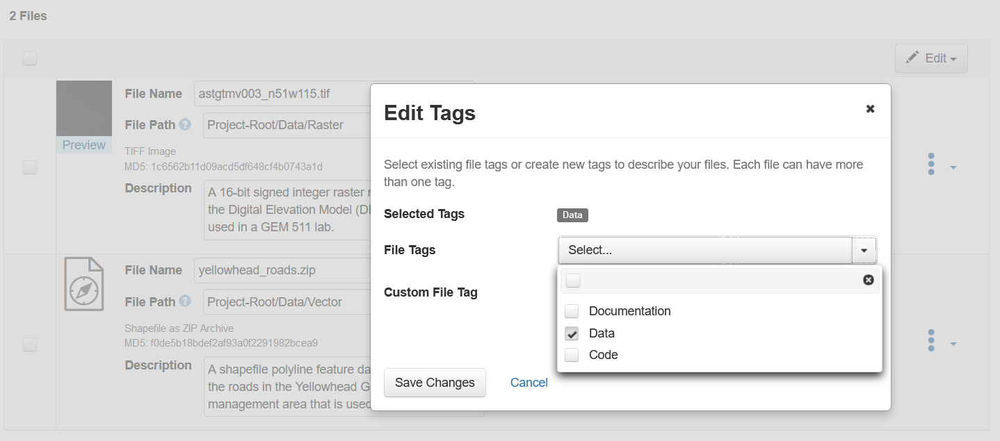
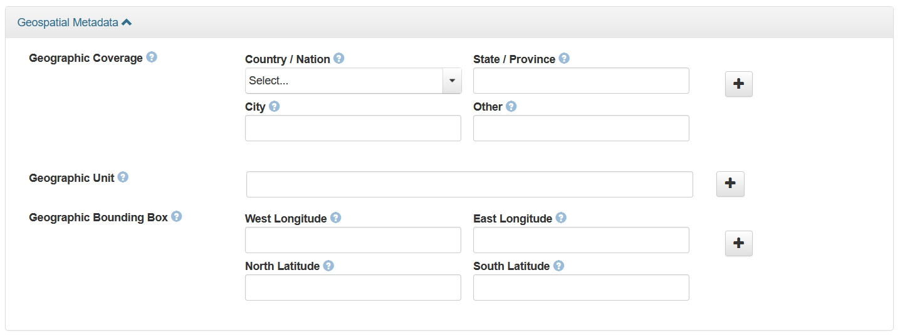

Lab 7 Writing Metadata and Documentation
Written by Paul Pickell and Francois du Toit
Lab Overview
The aim of this lab is to practice good geospatial data management habits and produce robust metadata for your final project. Metadata describe your data so it can be used, shared, and understood widely. Creating metadata can be time consuming, however bad metadata negatively affects the integrity, discoverability, preservability, and usability of your data. If you do not create good metadata, it will have significant negative effects on your data and your credibility.
As you work through this lab, you should reference the UBC Library Research Commons Research Data Management website and specifically the pages related to depositing geospatial data to Dataverse.
Learning Objectives
- Create metadata for geospatial data assets
- Archive project outcomes with the UBC Scholars Portal Dataverse
- Share and feature your achievements with the MGEM Project Library
Deliverables
The main deliverables for this lab will be uploading your final project data products, as well as an associated README, and metadata to the Scholars Portal Dataverse and also to the course management system. These metadata will be used to create the public page that features your project acheivements on the MGEM Project Library.
Answers to the metadata questions on the course management system (50 points):
What is the DOI URL for your project on the MGEM Dataverse? (5 points)
Upload an image that will be used to feature your project on the MGEM Project Library (5 points)
Upload your README file (5 points)
Select 6 keywords separated by commas to describe your project that you also used for the MGEM Dataverse (6 points)
Write the title for your project (5 points)
Write the abstract for your project (5 point)
Who is your faculty mentor or community partner? What is their affiliation? (5 points)
What is the URL to your project StoryMap? (5 points)
Upload a polygon GeoJSON file of your study area (5 points)
What is the maximum latitude (top) of your study area in decimal degrees? (1 point)
What is the minimum latitude (bottom) of your study area in decimal degrees? (1 point)
What is the minimum longtiude (left) of your study area in decimal degrees? (1 point)
What is the maximum longitude (right) of your study area in decimal degrees? (1 point)
Data
There are no data for this lab, but the information needed will come from your FCOR 599 final project.
Task 1: Depositing in the Dataverse
In order to deposit data, you will first need to log in to the Dataverse.
Step 1: Navigate to the MGEM Dataverse, and log in via the top right corner. Be sure to select UBC, and you will be directed to use your Campus Wide Login (CWL).

Step 2: Once you are logged in, you can click “+Add Data” then select “New Dataset” from the drop-down menu. Important, make sure that you are on the MGEM Dataverse landing page and not the general UBC Dataverse! See screenshot below.

Ensure that the “Host Dataverse” field is pre-populated with “Master of Geomatics for Environmental Management”. If you see anything else, go back to the URL above to access the MGEM Dataverse and try again.
Step 3: You might also notice that you can choose a “Dataset Template”. “CC Attribution 4.0 International (CC BY 4.0)” is the default license that most MGEM datasets are licensed under, but you have the option to select any license you prefer from the drop-down menu. Fill in all of the required “Citation Metadata” fields below. In the “Description” field, paste your abstract. Add your “Keywords”, individually in the respective fields. Other non-required fields can be left as-is for now.

It is important that you discuss with your Topical Mentor the appropriate license for your project data as some research data may have a license that takes precedence over any derivatives that you have created for your project. You can learn more about the various Creative Commons (CC) licenses here: https://creativecommons.org/share-your-work/cclicenses/. You may also want to use this license chooser tool: https://chooser-beta.creativecommons.org/.
Step 4: Once you have filled in the metadata for your project, it is time to prepare your files for upload. Ensure that you are applying best practices:
- Followed file naming conventions
- Converted your spatial data to the appropriate archival formats
- Organized everything in the proper directory structure.
When uploading to Borealis, the first zipped level will be unpacked into whatever files and directories you have in the zip file. Any zip files within this structure (i.e., double-zipped) will be preserved as a zip file, which has some advantages for some file types and sub-directories.
Some geospatial data should be zipped or even double-zipped. Refer to the UBC Library Research Commons Geospatial Data Deposit guide for information specific to your type of research data. You can preserve the directory structure of your project by zipping the directory into a single zip file and uploading this to Borealis. However, you may want to zip or double-zip some sub-directories, like one that contains the contents of a shapefile. Double-zipping files also makes it simpler to describe a file with metadata on Borealis.


Step 5: At a minimum, upload your final report, as well as all of your final data outputs (derivatives only, no “raw” data), and your README file. You may also optionally add any other data that might be relevant to your project such as (well-annotated) code/scripts, videos, presentation slides, posters, and other multimedia. Add metadata descriptions for each file in your project and adjust file names as necessary. Click the ellipse to the right to add pre-set tags to each file or create your own custom tags.


Step 6: When you are satisfied, click “Save Dataset”. You will be presented with a landing page that is a DRAFT of your final project archive. Scroll down a bit and click on the “Metadata” tab that appears just above your data files. Then click on the “Add + Edit Metdata” button in the top right. This will expose all of the available metadata fields, many of which were not available when you created the draft of your submission.

Step 7: Scroll to the bottom and expand the “Geospatial Metadata” and then fill in all of these fields. Take note that these values will also be submitted for this lab assignment on the course management system, so write them down or add them to the assignment page at the same time that you record them in Borealis. Populate as many of the other fields as you can. For example, you should be able to add information about the “Language”, “Data Type”, and “Software” fields. Not all of the fields will apply to your project, which is why they are not all required, but you should take care to fill in as many as possible.
Remember, you are the only expert of your research data and the only person in the world who can properly describe your research data, so make it count!

Step 8: Once you are satisfied with your metadata fields, click “Save Changes” at the bottom. From the project data landing page, in the top-right, select “Submit for Review”. This action will send your draft dataset to the admins of the MGEM Dataverse, which include the Research Data Librarian and the instructor. We only will review your submission for missing required information or make suggestions to improve your file naming convention, data organization or file types. You should proof-read your submission to ensure there are no typos or other major omissions.
Summary
Writing metadata and documentation is a labor-intensive process that completes the life cycle of any project. Geospatial data have some unique characteristics that enable those data to be discovered via spatial filtering using bounding boxes or geographic and place name keywords. The important thing to remember is that you are the expert of your research or project data and no one will be more qualified to produce those metadata than yourself. Consider thinking back to all the data sources that you perused for your project. If those data did not have sufficient metadata to discover them, then your project might never have been possible. That is the power of good metadata.
Return to the Deliverables section to check off everything you need to submit for credit in the course management system.